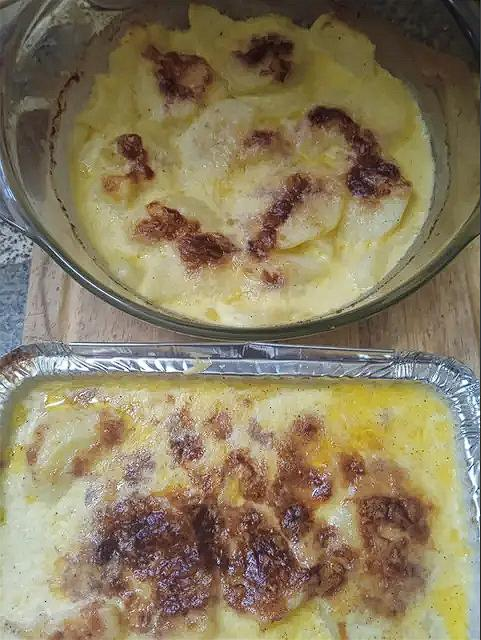
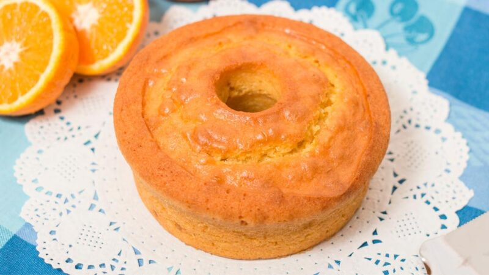
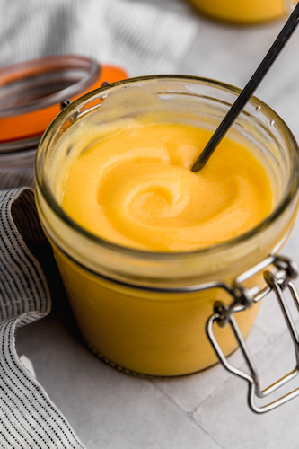

Algo rico y sano
Tortilla de zucchini

Ingredientes
1 zucchini, 1 cebolla chica, Sal, 3 huevos, Pimienta, 1 cucharadita polvo para hornear, Ajo en polvo, Tomillo.
Paso a paso
- Pelar y cortar en cubitos el zucchini
- Cortar también la cebolla bien chiquita. Aparte batir los huevos con sal, pimienta y ajo en polvo. También agregar el polvo de hornear y un poco de tomillo.
- Freír la cebolla y el zucchini. Una vez tierno agregar al batido de huevo.
- Llevar nuevamente a la sartén cocinar de ambos lados.
Papas a la crema
Ingredientes
- 2k papas
- 1 diente de ajo
- 1/2 cda. de manteca
- 1/2 taza de crema de leche
- 1/2 taza de leche
- 1 cda. de queso untable
- Sal y pimienta a gusto
Paso a paso
- Pelar las papas y cortarlas en rodajas medianas.
- Untamos el fondo de una fuente para horno con media cucharada de manteca blanda. Sobre esta manteca, frotamos el ajo, sin piel y partido al medio.
- Acomodamos en la fuente las papas.
- Ahora colocamos en un bol la leche, la crema de leche, el queso crema, sal, y bastante pimienta. Batimos hasta que el queso crema se disuelva.
- Echamos la mezcla de crema sobre nuestras papas y llovemos con queso rallado.
- Llevar a horno una media hora. Al sacarlo, se verá la parte de arriba dorada y crocante.
Y de postre?
Torta de Durazno
Ingredientes
2 tazas de harina común tamizada, 4 cdtas de polvo de hornear, 1 1/4 taza de azúcar, 120 grs de manteca blanda, 4 huevos, 1 cdta de esencia de vainilla, 3 duraznos cortados en rodajas.
Paso a paso
- Precalentar el horno a 180 grados. Enmantecar y enharinar un molde de torta de 24 cm.
- En un bowl, batir la manteca junto con el azúcar hasta quede cremoso. Agregar los huevos de a uno por vez, y agregar la esencia de vainilla.
- Agregar la harina y el polvo de hornear, y mezclar hasta integrar. Volcar la preparación en el molde y acomodar por encima las rodajas de frutas. Espolvorear con azúcar común y llevar al horno por 40-45 min., o hasta que, al pinchar con un cuchillo, salga seco.Dejar enfriar unos minutos antes de desmoldar.
Bizcochuelo de Naranja
Ingredientes
4 huevos, 200 g de azúcar, 250 g de harina, 1 cucharada de polvo de hornear o levadura, 100 ml de aceite de girasol, 120 ml de jugo de naranja, Ralladura de 1 naranja, Manteca para enmantecar el molde.
Paso a paso
- Precalentar el horno a 180 grados.
- En un bol grande, batir los huevos con el azúcar hasta obtener una mezcla espumosa.
- Añadir el aceite, el jugo de naranja y la ralladura de naranja y mezclar bien hasta integrar.
- Añadir la harina tamizada y la levadura en polvo y mezclar suavemente hasta que quede homogéneo.
- Enmantecar y enharinar un molde para bizcochuelo (22 cm aprox.) y verter la mezcla.
- Hornear durante 35-45 minutos o hasta que el bizcochuelo esté doradito y firme al tacto. Dejar enfriar completamente antes de desmoldar y servir.
Crema de Limón
Ingredientes
4 cdta ralladura de limón, 120 ml de jugo de limón, 220 g azúcar granulada, 6 huevos, 50 g mantequilla sin sal fría y cortada en cubitos.
Paso a paso
- Pon una olla con agua sobre fuego medio. Una vez que empieza a hervir, baja la temperatura hasta que veas solamente un ligero hervor.
- Retira el bowl del baño María y agrega al bowl todos los ingredientes menos la mantequilla y mezcla con un batidor de mano.
- Regresa el bowl al baño María y mezcla con una espátula cada par de minutos hasta que la crema se haya cuajado. Está listo cuando ves que la mezcla se pone gelatinosa.
- Saca la crema del calor y transfiérelo a otro bowl a través de un colador. Agrega la mantequilla y mezcla hasta que se haya derretido e incorporado por completo.
- Deja que la crema se enfríe totalmente a temperatura ambiente para luego refrigerar toda la noche.